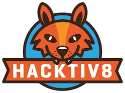

SKILL ACADEMYSkill Academy merupakan inovasi terbaru dari Ruang Guru, Sebuah perusahaan teknologi terbesar dan terlengkap di indoenesia yang berforkus pada layanan berbsis pendidikan dan telah memiliki lebih dari 15 juta pengguna dari 100 bidang pelajaran.Aplikasi ini dikembangkan oleh tim terbaik yang sebelumnya telah meksuseskan Ruang Guru |
Mau Belajar ApaMauBelajarApa.com (PT. Avodah Royal Mulia) adalah platform pasar online yang memudahkan para pembelajar mencari dan mendaftar ke kelas-kelas vokasional yang sudah dibuat oleh para pengajar.Lahir di tahun 2015 sebagai sebuah platform yang awalnya ingin menghubungkan murid dengan tutor private, MauBelajarApa.com kemudian berkembang menjadi pasar workshop terbesar di Indonesia, bekerja sama dengan lebih dari 1000 pengajar (dan angka ini terus berkembang pesat), menawarkan lebih dari 1.000 workshop setiap tahunnya, dan melayani lebih dari 70.000 pembelajar sejauh ini. 
|
HACKTIV8HACKTIV8 adalah Program pembelajaran untuk pemula yang ingin menjadi seorang Full Stack Developer. Perusahaan pelatihan tersebut berfokus pada pelatihan Digital. Program Pelatihan ini cocok bagi kalian yang ingin menjadi seorang programer ataupun designer. Banyak perusahaan pekerjaan yang berminat untuk merekrut Alumninya. Rata-rata adalah perusahaan media digital yang merekrut alumni Hacktiv8.  |